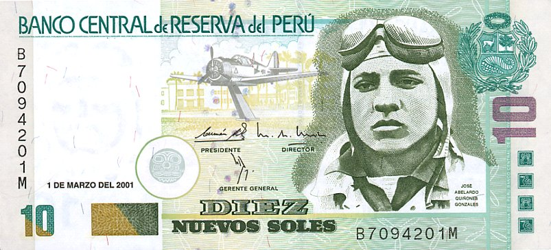

____
Валюта
Валюта в Перу - Перуанский новый соль.
Курс: 1 Перуанский новый соль - 20,23 рублей (7 февраля 2021).
Появился Перуанский новый соль в 1991 году. Находятся банкноты номиналом 10, 20, 50, 100, 200 солей, а также монеты — 10, 20, 50 сентимо, 1, 2, 5 солей.

История
Соль был введён 14 февраля 1863 года в результате денежной реформы по замене старой испанской денежной системы на новую национальную перуанскую. До этого, с 1858 по 1863, в республиканском Перу выпускались номиналы в реалах, сентаво и эскудо. Была введена десятичная система, 1 новый соль равнялся 10 старым реалам. Также соль заменил боливийское песо, которое было распространено на юге Перу, обмен производился из расчёта 1,25 песо за 1 новый перуанский соль. Изначально новая валюта была привязана к французскому франку: 1 соль равнялся 5 франкам, около пяти солей равнялись британскому соверену.
В 1880 и 1881 году были выпущены серебряные песеты, 1 песета равнялась 20 сентаво. В 1881 году была введена денежная единица «инка» для выпуска бумажных денег, 1 «инка» равнялась 10 солям.
В 1901 году привязка соля к французскому франку была отменена и соль был привязан к фунту стерлингов, начался выпуск золотой монеты «либра», равнявшейся 10 солям и по золотому содержанию соответствующей британскому соверену. Привязка к фунту продолжалась до 1930 года, когда Перу отказалось от золотого стандарта и привязало соль к доллару США по курсу 2,5 соля = 1 доллар США. Этот курс оставался неизменным до 1946 года. Законом от 10 февраля 1930 года название денежной единицы изменено на «золотой соль».
____